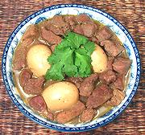

|
Pork Stew with EggsThailand - Mu Tom Khem | ||||
| Serves: Effort: Sched: DoAhead: |
4 w/rice ** 1 hr Yes |
A simple, easy to make stew, delicious in an Asian or Western context. It harks back to before the Portuguese brought hot chilis to Asia, getting its spiciness from black pepper. | |||
|
2 ------ 1 2 1 1 1 1 3 1/4 ------ 4 1-1/2 2 |
# --- T cl T t T T T c --- T T c |
Pork, lean (1) -- Marinade Cilantro Root (2) Garlic Peppercorns Salt Palm Sugar (3) Brandy Fish Sauce Soy Sauce (4) ----------- Eggs Oil Water |
Prep (30 min)
|